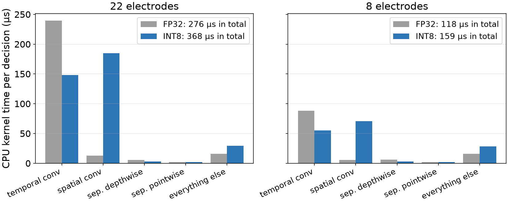

≤ 0.5 points
accuracy change in all 17 conditions
2.9× fewer
parameter bytes (9,576 → 3,260)
28% slower
0.358 vs 0.280 ms, 22 electrodes

The temporal convolution got 38% faster in INT8, but the grouped spatial convolution ran 14× slower (185 vs 12.8 µs): the quantized spatial operator dominated this profile.
Peiye Li · COMP 690 · 12 · ONNX Runtime 1.31.1 on an Apple M4 CPU; per-node times from its profiler